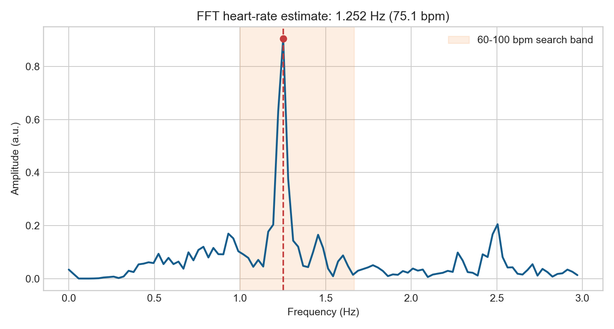
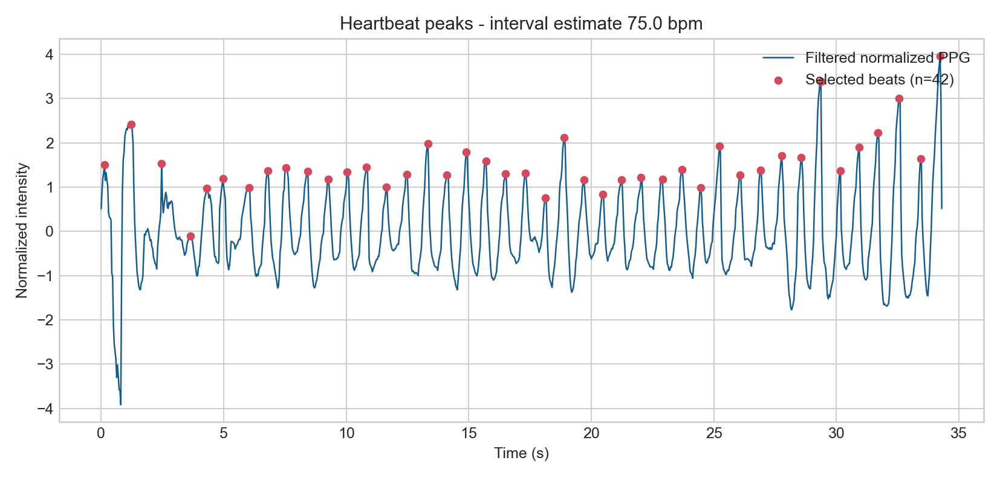
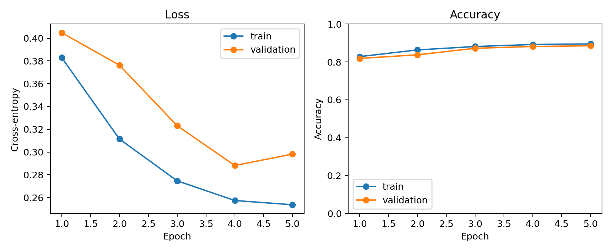
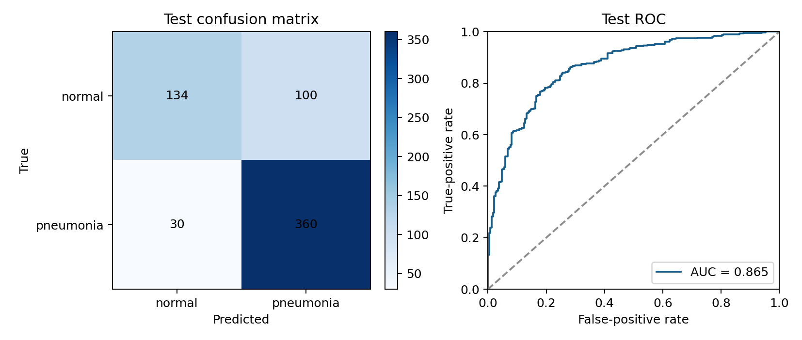
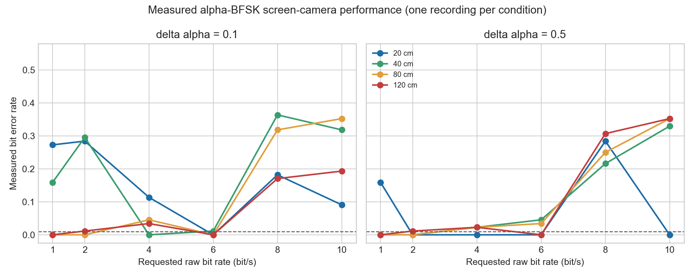

Assignment 4
Vital Visions
Three experiments use a phone camera, a medical image model, and a screen-camera link to measure biological and communication signals.
Results Summary
| Experiment | Result |
|---|---|
| Phone heart rate | 75.15 bpm by FFT and 75.00 bpm by peak intervals |
| PneumoniaMNIST | 79.17% test accuracy and 0.865 ROC AUC |
| Alpha-BFSK | 48 recordings at 20, 40, 80, and 120 cm |
Part 1
Smartphone Heart Rate Monitoring
Mean grayscale intensity was extracted from each camera frame. A 0.5 Hz high-pass filter removed slow drift. Heart rate was estimated from the FFT peak and the intervals between detected peaks.


Part 2
Medical Image Fine Tuning
An ImageNet-pretrained ResNet-18 was trained on PneumoniaMNIST. The backbone was frozen and the final classifier was trained for five epochs.
| Metric | Value |
|---|---|
| Best validation accuracy | 88.55% |
| Test accuracy | 79.17% |
| Sensitivity | 92.31% |
| Specificity | 57.26% |
| ROC AUC | 0.865 |


Part 3
Alpha-Channel Screen Camera BFSK
A browser transmitter encoded the message VITAL by changing screen opacity. The receiver measured grayscale intensity and decoded an 88-bit frame with CRC-16. The experiment tested two alpha differences, six raw bit rates, and four distances.

| Distance | Delta alpha | Maximum rate at BER at or below 1% | CRC passes |
|---|---|---|---|
| 20 cm | 0.1 | 6 bit/s | 1/6 |
| 20 cm | 0.5 | 10 bit/s | 4/6 |
| 40 cm | 0.1 | 4 bit/s | 2/6 |
| 40 cm | 0.5 | 2 bit/s | 2/6 |
| 80 cm | 0.1 | 6 bit/s | 3/6 |
| 80 cm | 0.5 | 2 bit/s | 2/6 |
| 120 cm | 0.1 | 6 bit/s | 2/6 |
| 120 cm | 0.5 | 6 bit/s | 2/6 |